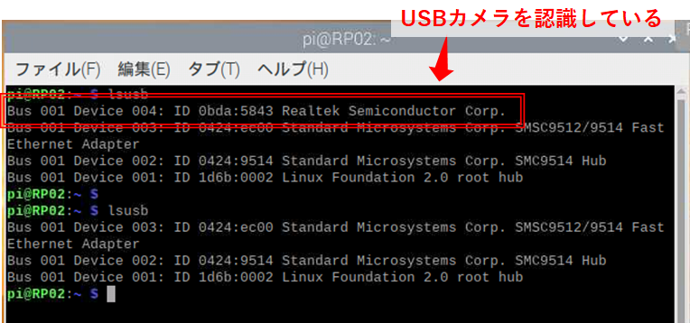

RaspberryPiとカメラモジュールを組み合わせて、定点観測を行う方法をまとめました。
この記事では、カメラはUSBカメラ、ストリーミング用ソフトはmjpeg-streamerを使用しています。
概要
RaspberryPiは、安くて高機能で使いやすいマイコンボードです。
超有名なので説明は不要ですね。
このラズパイとカメラモジュールを使用すると、定点観測を行うことができます。
定期的に写真をとって保存したり、遠隔操作で動画を確認したりできます。
以下、実現方法のまとめになります。
準備
ラズパイとカメラモジュールが必要です。
ラズパイは、カメラ用途だけでしたらラズパイ3がお勧めです。
ラズパイ4は今回の用途にはオーバースペックで、消費電力および発熱が少し大きいです。
ラズパイに接続できるカメラは、FFP 15ピンとUSBと2種類あります。
（FFP：Flexible Flat Cable）
どちらを使用しても問題ありません。
今回は、USBカメラを使用してみます。
USBカメラの接続確認
ラズパイにUSBカメラを接続したら、まず最初に認識しているか確認します。
ターミナルを起動し、”lsusb” と打ち込みます。
※ lsusb：USBデバイスの情報を表示するコマンド
USBカメラ接続時と未接続時で、表示数が変わっていれば認識しています。
次に、
ここで、USBカメラ側のUSBチップセットがラズパイに対応していないと、通信ができません。
今回使用したUSBカメラは「realtek semiconductor corp」と表示されているので、これに対応したドライバをインストールします。
realtek semiconductor corp USBドライバーのインストール
※必要な場合のみ、下記を行ってください。
https://ambidata.io/samples/network/rpi_usbwifi/
ストリーミング用ソフトのインストール
mjpeg-streamerというソフトを使用します。
sudo apt-get install cmake libjpeg8-dev
sudo apt-get install gcc g++
git clone https://github.com/jacksonliam/mjpg-streamer.git
cd mjpg-streamer/mjpg-streamer-experimental/
make
sudo make install
起動は、同じフォルダにあるStart.shというバッシュファイルを実行します。
bash start.sh
wget -O /tmp/picture.jpg http://localhost:8080/?action=snapshot
sudo apt-get -y install ffmpeg ffmpeg -i http://localhost:8080/?action=stream -an -vcodec MPEG4 file.mp4
ffmpeg -i http://localhost:8080/?action=stream -an -r 10 -vcodec libx264 ./file.mp4
ffmpeg -i http://localhost:8080/?action=stream file.avi
シリアルポートのオープン
シリアルポート通信の各種設定をしたのち、接続をOpenします。
コードは以下です。
public void SerialOpen()
{
try
{
serialPort.PortName = port; //選択したport名
serialPort.BaudRate = baudrate; //選択したbaudrate
serialPort.DataBits = 8;
serialPort.Parity = Parity.None;
serialPort.StopBits = StopBits.One;
serialPort.WriteTimeout = 1000;
serialPort.ReadTimeout = 1000;
serialPort.Encoding=Encoding.UTF8;
serialPort.Open();
}
catch (Exception ex)
{
MessageBox.Show(ex.Message);
}
}
シリアルポートのクローズ
シリアルポート接続をCloseします。
public void SerialClose()
{
try
{
serialPort.Close();
}
catch (Exception ex)
{
MessageBox.Show(ex.Message);
}
}
データの送信
文字列を送信します。
public void Send()
{
if (serialPort.IsOpen)
{
serialPort.Write(TXData);
}
}
データの受信
文字列を受信します。
受信データの取り出しは、割込みを使って行います。
データを受信したらすぐにデータを取り込んでくれます。
SerialCom.serialPort.DataReceived += OnReceived;
private void OnReceived(object sender, SerialDataReceivedEventArgs e)
{
RXData += serialPort.ReadExisting();
}
動作確認のためのシリアル通信折り返し方法
シリアル通信で送信したデータを折り返してそのまま受信すると、送信と受信の確認を同時にできて効率的です。
以下のUSB-シリアル変換を使用すれば確認可能です。
TxピンとRxピンを導線で繋いで動作確認します。
Arduinoなどが手元にあれば、折り返しするようプログラミングしても良いですね。
Profile ---

やまっく
ソフト勉強中のハードエンジニアです。